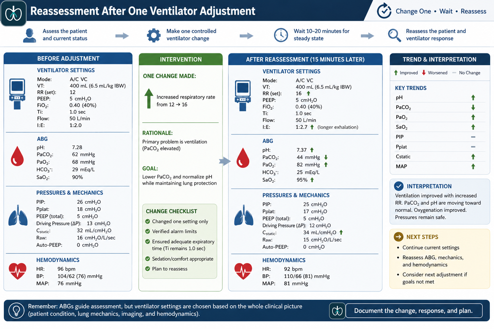

Ventilator Adjustments Using ABGs
Translate pH, PaCO₂, and PaO₂ into one safe, prioritized ventilator change—then reassess the patient’s response.
What You Will Be Able to Do
By the end of this lesson, you should be able to interpret an ABG in the context of the patient and current ventilator settings, identify whether the immediate problem is ventilation or oxygenation, choose the setting that directly targets the abnormality, and anticipate the consequences of that change.
Use pH and PaCO₂ to decide whether minute ventilation should increase, decrease, or remain unchanged.
Use PaO₂, SpO₂, FiO₂, PEEP, and disease physiology to choose the safest oxygenation adjustment.
Avoid correcting a number at the expense of lung injury, air trapping, or hemodynamic instability.
Evaluate the patient, pressures, waveforms, and repeat ABG after the intervention.

Do Not Chase the ABG
An ABG is a snapshot of physiology. It does not automatically tell you which ventilator knob to turn. The safest approach is to interpret the ABG alongside the patient’s diagnosis, current settings, measured pressures, spontaneous effort, and trend.

What the NBRC wants you to notice
The exam often includes several abnormal values. Your task is to identify the priority physiologic problem and select the one intervention that directly treats it without creating a larger danger.
Identify the Primary Problem
Start with the pH. A low pH with an elevated PaCO₂ indicates respiratory acidosis and inadequate alveolar ventilation. A high pH with a low PaCO₂ indicates respiratory alkalosis and excessive alveolar ventilation. A low PaO₂ or saturation identifies an oxygenation problem, but it does not tell you whether FiO₂ or PEEP is the better change.
| Finding | Meaning | Ventilator Direction |
|---|---|---|
| pH low, PaCO₂ high | Insufficient ventilation | Increase effective minute ventilation, unless permissive hypercapnia is appropriate |
| pH high, PaCO₂ low | Excessive ventilation | Decrease effective minute ventilation |
| PaO₂ low on low/moderate FiO₂ | Hypoxemia | Increase FiO₂ initially or PEEP if alveolar recruitment is needed |
| PaO₂ low despite high FiO₂ | Likely shunt/recruitment problem | Increase PEEP and assess recruitability/hemodynamics |
Decision Checkpoint: What is the priority?
A patient on VC-A/C has pH 7.26, PaCO₂ 60 mmHg, PaO₂ 92 mmHg, HCO₃⁻ 26 mEq/L, and SpO₂ 96%.
Correct Ventilation with a Controlled Calculation
PaCO₂ changes inversely with alveolar ventilation. When CO₂ is too high, effective minute ventilation usually must rise. When CO₂ is too low, effective minute ventilation usually must fall. The calculation gives a starting target—not permission to ignore lung-protective limits.
Desired V̇E = Current V̇E × Current PaCO₂ ÷ Desired PaCO₂
Worked example: Current V̇E is 6.4 L/min, PaCO₂ is 48 mmHg, and the desired PaCO₂ is 40 mmHg.
You could theoretically reach that target by increasing rate, tidal volume, pressure control, or a combination. The correct choice depends on plateau pressure, delivered VT, expiratory time, spontaneous effort, and disease.
Calculation Practice
Current V̇E = 5.5 L/min, PaCO₂ = 56 mmHg, desired PaCO₂ = 42 mmHg. Enter the desired minute ventilation rounded to the nearest tenth.
Choose Rate or Tidal Volume—Not Just “More Ventilation”
Increasing rate and increasing VT can both raise minute ventilation, but they do not carry the same risks. A rate increase shortens the total respiratory cycle and may reduce expiratory time. A VT increase raises alveolar stretch and may elevate plateau pressure.
VT is already near the protective target, plateau pressure is a concern, and sufficient expiratory time remains.
Delivered VT is clearly below target, plateau pressure is safe, and the patient is not at risk for overdistention.
A higher rate can worsen auto-PEEP. Consider higher inspiratory flow, shorter Ti, lower rate, and permissive hypercapnia.
Do not increase VT above lung-protective limits merely to normalize PaCO₂. Accept permissive hypercapnia when clinically appropriate.

Decision Checkpoint: Which setting?
ARDS patient: VC-A/C, VT 6 mL/kg PBW, rate 18, Pplat 29 cmH₂O, flow returns to baseline before the next breath. ABG: pH 7.27, PaCO₂ 55 mmHg, PaO₂ 78 mmHg.
Choose FiO₂ or PEEP Based on the Pattern
FiO₂ increases the oxygen concentration delivered to the lungs. PEEP increases end-expiratory lung volume and can recruit unstable alveoli. The safest choice depends on the severity of hypoxemia, current FiO₂, disease process, blood pressure, and whether the lungs are recruitable.
| Clinical Pattern | Preferred Initial Move | Reasoning |
|---|---|---|
| Mild hypoxemia on low FiO₂ | Increase FiO₂ | Fast, predictable correction with limited immediate risk |
| Persistent hypoxemia on moderate/high FiO₂ in ARDS | Increase PEEP using a protocol | Targets shunt and alveolar collapse while limiting prolonged high FiO₂ |
| Hypotension after PEEP increase | Reassess PEEP and volume status | PEEP can reduce venous return and cardiac output |
| COPD with adequate SpO₂ | Avoid unnecessary FiO₂ escalation | Titrate to the prescribed target rather than chasing 100% |

Guided Case: FiO₂ or PEEP?
ARDS patient on VC-A/C: FiO₂ 0.70, PEEP 8 cmH₂O, SpO₂ 87%, PaO₂ 52 mmHg, MAP 78 mmHg. Ventilation and pH are acceptable.
The Same ABG Does Not Always Produce the Same Change
A PaCO₂ of 55 mmHg may require correction in one patient and be acceptable in another. The goal is not universal normality; the goal is adequate gas exchange with the least harm.

Match the pattern to the safest strategy
Evaluate the Trend, Not Just the New Number
After any ventilator change, reassess the patient first. Confirm chest movement, comfort, airway position, exhaled VT, total rate, waveforms, PIP, Pplat, blood pressure, and SpO₂. Repeat the ABG after enough time has passed for the new steady state—often about 20 to 30 minutes in a stable adult.

Trend Interpretation
Before change: rate 12, VT 400 mL, pH 7.29, PaCO₂ 58. Rate was increased to 16. Thirty minutes later: pH 7.34, PaCO₂ 48, Pplat unchanged, flow returns to baseline, BP stable.
Integrated ABG Adjustment Case
Patient
67-year-old man with severe COPD, intubated for acute-on-chronic hypercapnic respiratory failure.
Flow-time waveform does not return to baseline before the next breath. Total PEEP is 11 cmH₂O. ABG: pH 7.27, PaCO₂ 72, PaO₂ 76, HCO₃⁻ 32. SpO₂ 93%. BP 92/58.
1. What is the most important clue?
2. What is the best first ventilator adjustment?
3. What response would indicate improvement?
ABG-Guided Ventilator Adjustments
1. Which setting directly changes ventilation?
2. When is PEEP favored over more FiO₂?
3. Why not increase VT aggressively in ARDS?
4. What must occur after a ventilator change?
Clinical Pearls
PaCO₂ and pH guide minute ventilation; PaO₂ and saturation guide FiO₂ and PEEP.
Rate and VT are not interchangeable when plateau pressure or expiratory time is limited.
Permissive hypercapnia may be safer than overdistention or worsening auto-PEEP.
Confirm that the intervention improved physiology without creating a new problem.